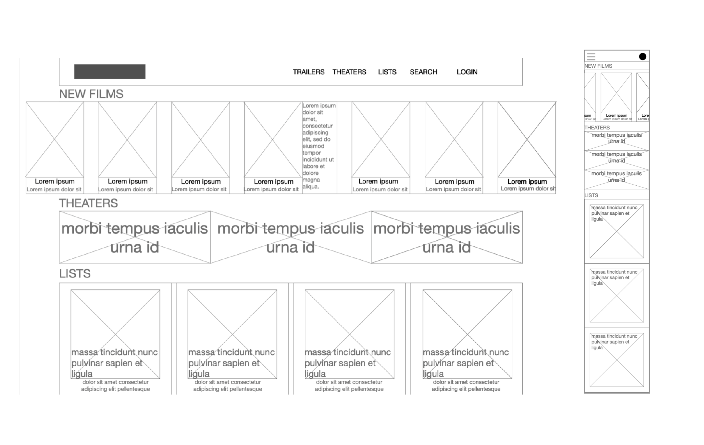
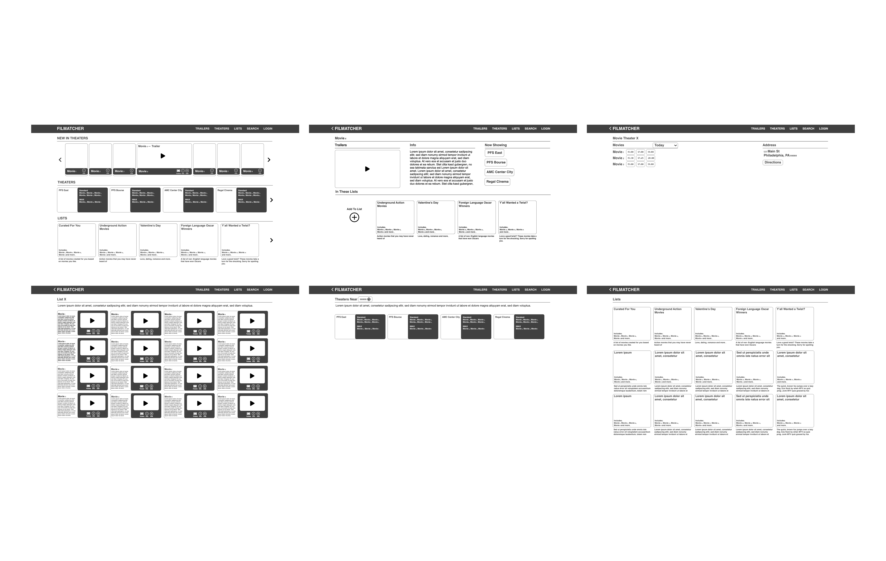
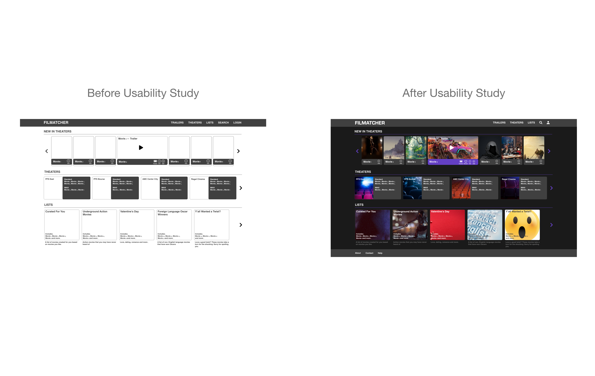
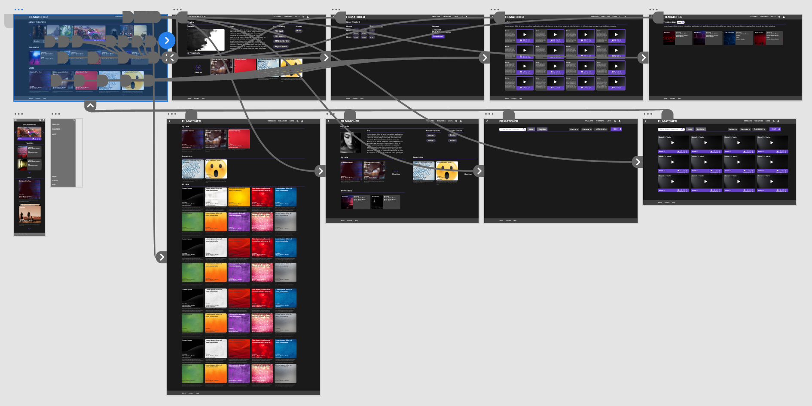

Filmatcher
Filmatcher is a website that allows the user to watch movie trailers that are recommended based on films the user is interested in or has seen. After viewing trailers and reading information, users can save movies to lists, and find out where to watch them.

UX Case Study
UX
Role
I was the lead UX researcher and UX designer of this project.
The Goal
This website can be used by a movie theater, or group of movie theaters and streaming services, to recommend movies to their patrons and find out where they can watch them. It promotes users to discover new movies to watch based on lists that are suggested to and created for them. Even if a certain movie is not currently showing in theaters or available through streaming, the user can save the title to revisit.
User Research: Summary
I conducted interviews and then delineated empathy maps in order to understand the users of this app their needs. The primary user group identified through research was adult movie goers, who are open to watching movies recommended to them.
The user group confirmed that people are most intrigued by a movie by first reading a short description, and then watching a trailer. The user does not enjoy the extra steps of having to find out where and when movies are playing after viewing the trailer. This platform streamlines that process and shows the user all pertinent information on the movie and its viewing options all in one step.
User Pain Points: Inconvenience
In order to figure out which movie to watch, people have to visit several sites: first a site that shows trailers like YouTube, then another site to read reviews and find recommendations, and finally a site to buy tickets or stream the movie.
User Pain Points: Inconvenience
People may be discouraged from going to a movie theater because they are not sure what movie to watch. A site that recommends movies based on what you like, and then provide you immediate information on getting access to watching that movie based on what you like would streamline this decision-making process.

Design: Wireframes
In the initial wireframes, I wanted to place emphasis on trailers shown with short descriptions, that the user can easily scroll through. These are recommended based on the user's preferred genres, actors and saved movies. I also wanted the homepage to feature curated lists that compile movies based on various themes. Mobile layouts were also designed to show how the responsive site would appear on phones.

Low-Fidelity Prototype
Using the completed set of digital wireframes, I created a low-fidelity prototype. The primary user flow I connected was clicking on a recommended movie on the homepage, viewing its info, and where it can be viewed. The user can also see what lists the movie appears under.
Usability Studies
Round 1 Findings
- Users want to be given immediate recommendations on the hompage.
- The homepage should also show lists and movie theaters nearby.
- Big colorful stills from the movies can pique interest of the user.
Round 2 Findings
- The homepage should not be flooded with ads, and should showcase movie recommendations.
- The color scheme of the app should be dark, to mimic being in a movie theater.
- Buttons should be prominent.

Refining the Design
After the usability study, it was also determined that a darker color scheme was preferred to encapsulate the experience of watching movie trailers in a theater.

High-Fidelity Prototype
The final high-fidelity prototype presented cleaner user flows for looking at a movie’s information and exploring the options of viewing it or saving it to a list.

Impact
This app streamlines the process of figuring out what movie to see in theaters. It gives people personalized recommendations and allows them to save movies to lists, and find out where to see it.
What I Learned
While designing Filmatcher, I learned about the process of graceful degradation. This is where you begin the process of designing the user interface with a larger window size, and then reorganize and compartmentalize components to fit smaller screen sizes after the desktop UI has been designed.